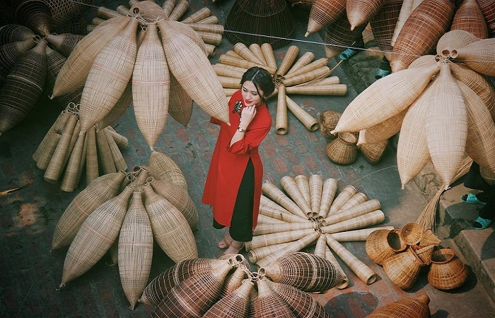

Là một làng nghề lâu đời tại Hưng Yên, làng Thủ Sỹ luôn giữ cho mình nét đẹp cổ xưa suốt bao năm nay. Lạc bước đến đây, người lữ khách phương xa sẽ chìm đắm vào không gian miền quê đúng nghĩa, một nhịp sống bình yên không thể có ở chốn đô thành.
Vào những ngày thời tiết lý tưởng, bạn đi đến bất kỳ hộ gia đình nào đều sẽ bắt gặp được hình ảnh những đóa hoa bằng tre, nứa bắt mắt ngập tràn ở các khoảng sân trước nhà. Bạn có thể trò chuyện với những người dân chất phác, ngắm nghía các đôi tay thoăn thoát đan nứa, vọt tre hay nghe họ kể về những câu chuyện tình làng nghĩa xóm rất đỗi thân thương.